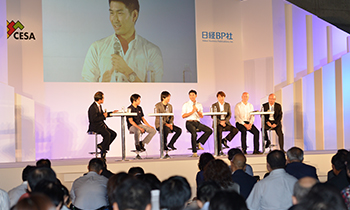
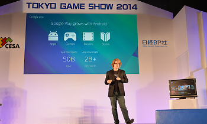
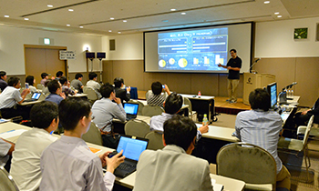

![Business Day 2015.9.17[Thu]-18[Fri] Public Day 2015.9.19[Sat]-20[Sun] @ Makuhari Messe](../../common/images/sp_date_en.png)
![TOKYO GAME SHOW 2015
Business Day 2015.9.17[Thu]-18[Fri] Public Day 2015.9.19[Sat]-20[Sun] @ Makuhari Messe](../../common/images/maintitle_en.png)


※We recommend that you get an idea of the look and feel of Tokyo Game Show 2015 (TGS2015) in advance. Photos from TGS2014 are included to help you form a mental picture. Please note, however, that there will be some differences between TGS2015 and TGS2014, so the photos are for reference purposes only.
A Keynote Session will be held on the first Business Day (September 17 (Thursday)) from 10:30 a.m. at the Event Stage in International Exhibition Hall 1.
Admission is free of charge, and on-site applications for admission will be available (presentation of your business card required). However, persons who have made advance online applications will be prioritized for entry. As there is limited capacity, we recommend that you register in advance to ensure that you will be able to attend. (To apply in advance, please go to the TGS Forum 2015 webpage.)
If you apply in advance, please be sure to print out and bring the TGS Forum Ticket (A4 paper size) that will be attached to the email confirming the completion of your advance application.
You do not need to go through the Tokyo Game Show reception counter to attend the Keynote Session. If you do not have time to go to the reception counter, please go directly to the Hall 1 entrance at the second-floor concourse of International Exhibition 1 - 8 and proceed to the Event Stage reception counter for the Keynote Session.
Note that you will not be permitted entry to the Tokyo Game Show exhibition hall itself without going through the TGS admission reception. If you have not already gone through the TGS admission procedure, please go to the TGS2015 reception counter after the Keynote Session to gain entry to the TGS exhibition halls.


The Asia Game Business Summit 2015 will be held on the first day of Business Day (September 17 (Thursday)) from 1:30 p.m. at the Event Stage in Exhibition Hall 1.
This year, top executives from Chinese and Japanese game companies will be discussing challenges and outlooks related to the game business, which is expanding across national borders.
Admission is free of charge, and on-site applications for admission will be available (presentation of your business card required). However, persons who have made advance online applications will be prioritized for entry. We recommend that you register in advance to ensure that you will be able to attend. (To apply in advance, please go to the TGS Forum 2015 webpage.)
If you apply in advance, please be sure to print out and bring the TGS Forum Ticket (A4 paper size) that will be attached to the email confirming the completion of your advance application.
You do not need to go through the Tokyo Game Show reception counter to attend the Asia Game Business Summit 2015. If you do not have time to go to the reception counter, please go directly to the Hall 1 entrance at the second-floor concourse of International Exhibition Halls 1 - 8 and proceed to the Event Stage reception counter for Asia Game Business Summit 2015.
Note that you will not be permitted entry to the Tokyo Game Show exhibition hall without going through the TGS admission reception. If you have not already gone through the TGS admission reception procedure, please go to the TGS2015 admission reception counter after the Asia Game Business Summit 2015 to gain entry to the TGS exhibition halls.
The TGS Forum Expert Session (fee charged) and TGS Forum Sponsorship Session (free of charge) will be held in the afternoon of the second Business Day (September 18 (Friday)) at the International Conference Hall. These sessions will offer the latest information on the game industry situation. To apply in advance, please go to the TGS Forum 2015 webpage.
On-site application is available. However, the session may reach capacity before you arrive. If you want to ensure admission, we recommend that you apply in advance.
If you apply in advance, please be sure to print out and bring the TGS Forum Ticket (A4 paper size) that will be attached to the email confirming the completion of your advance application and present it with your business card (mandatory).
Look here to learn about entry to the exhibition halls by persons who have applied to attend a TGS Forum Expert Session (fee charged).



2002-2015 CESA / Nikkei Business Publications, Inc. All rights reserved.